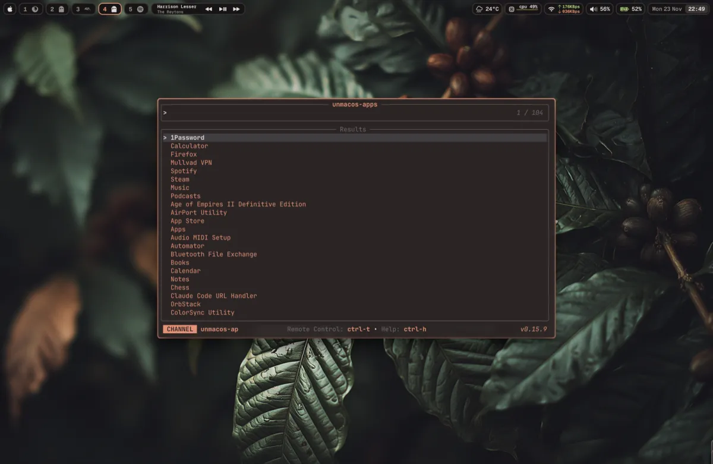
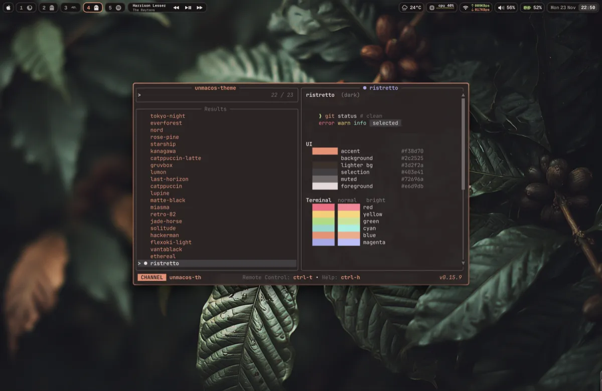

Free and open source · macOS 15 to 27 · Apple silicon
UnMacOS keeps macOS and replaces the desktop: windows that tile themselves, every app one keystroke away, fuzzy menus for everything, and one theme across the whole screen, switched live. Set up with one command.
{{INSTALL_CMD}}
macOS is a great operating system under a desktop designed for dragging. UnMacOS swaps the desktop for one you drive from the keyboard.
| Area | Stock macOS | UnMacOS |
|---|---|---|
| Windows | Drag and resize each one | They tile themselves; move them with Alt + HJKL |
| Apps | Dock, Launchpad, Spotlight | Alt + Space, type a few letters, Enter |
| Settings | System Settings panes | A fuzzy menu for Wi-Fi, Bluetooth, sound, power and themes |
| Look | Each app has its own | One theme for everything on screen, switched in a second |
| A new Mac | Set it all up again | One command and a few questions |
Tiling window manager
Open a window and it takes its place next to the others, with even 4px gaps and a highlighted border on the one you're using. Nothing overlaps and nothing needs dragging.
Five workspaces per display and four layouts: split, stacked, main-and-side and scrolling. Focus follows the mouse, and when you switch from the keyboard the pointer jumps to the new window and hides. Powered by Rift.
Launcher and menus
Alt + Space launches apps. Alt + Ctrl + V brings back anything you've copied. Alt + Ctrl + . finds an emoji. Alt + Esc locks, sleeps or restarts.
Every menu is a fuzzy finder (television): type a few letters, press Enter, and the result is pasted straight into the app you came from.

Live theme switching
Pick a theme and the bar, window borders, terminal, tmux, btop, Neovim, Firefox, Spotify and Orca all change at once, including editors that are already open. Each theme brings its own wallpapers and sets the macOS accent colour to match.
{{THEME_COUNT}} themes, from Tokyo Night and Catppuccin to Gruvbox, Nord, Rosé Pine and Kanagawa, light ones included. Try them on this page with the picker at the top.

Music, files, Git, Docker, system monitor, editor and Claude each have their own key. Press it again to jump to the window that's already open. They all run in Ghostty and share the theme.
SketchyBar replaces the menu bar with workspaces, now playing, volume, Wi-Fi, CPU, battery and weather. Alt + Shift + Space hides it and windows grow to fill the space.
Optionally switches off Apple Intelligence and turns Liquid Glass down as far as it goes, with 8px window corners to match the bar. Reapplied after macOS upgrades.
Asks what you want before anything changes: theme, optional app groups, what UnMacOS may touch. Press Enter all the way through for sensible defaults.
Checks services, permissions, theme, fonts and menus, and says exactly what to fix.
A chezmoi repo you can read, fork and change. Export your answers and the next Mac sets itself up with no questions.
UnMacOS is inspired by Omarchy, the keyboard-first Linux setup, and keeps its keys. Alt does what SUPER does there, Omarchy's ALT is Ctrl, and its CTRL is Cmd, so your muscle memory works. Omarchy's theme format drops straight in.
Open Terminal on a Mac with Apple silicon and run one command. It asks before it changes anything.
{{INSTALL_CMD}}